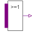
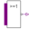

BasicBasic logic blocks without delays |
|
Package Contents
|
Not logic component without delay |
|
|
And logic component with multiple input and one output |
|
|
Nand logic component with multiple input and one output |
|
|  |
Or logic component with multiple input and one output |
|  |
Nor logic component with multiple input and one output |
|
Xor logic component with multiple input and one output |
|
|
Xnor logic component with multiple input and one output |
Information
This information is part of the Modelica Standard Library maintained by the Modelica Association.
Basic contains the basic gates according to standard logic. The components of Basic calculate their results using the corresponding truth tables. They do not contain any delay components.